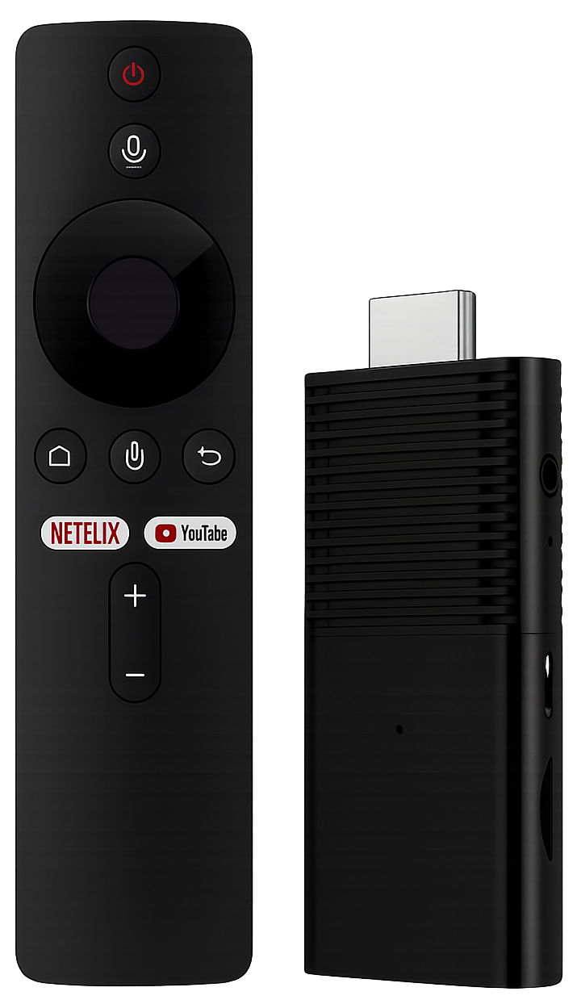
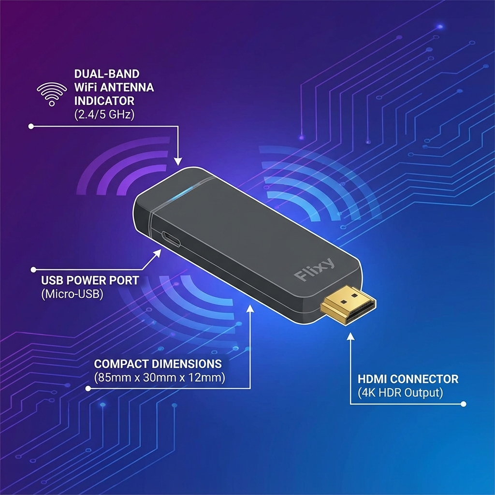
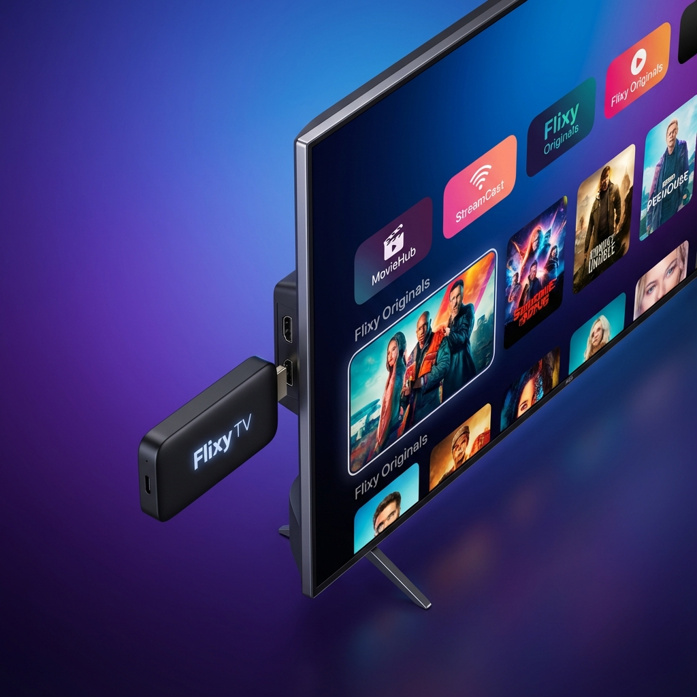
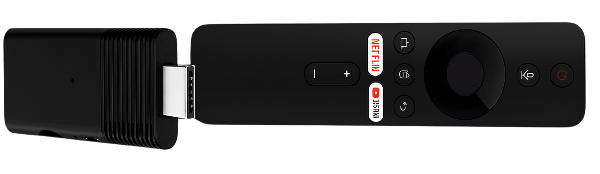
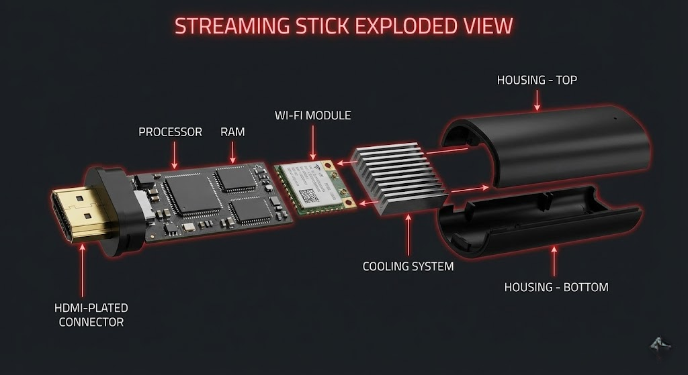
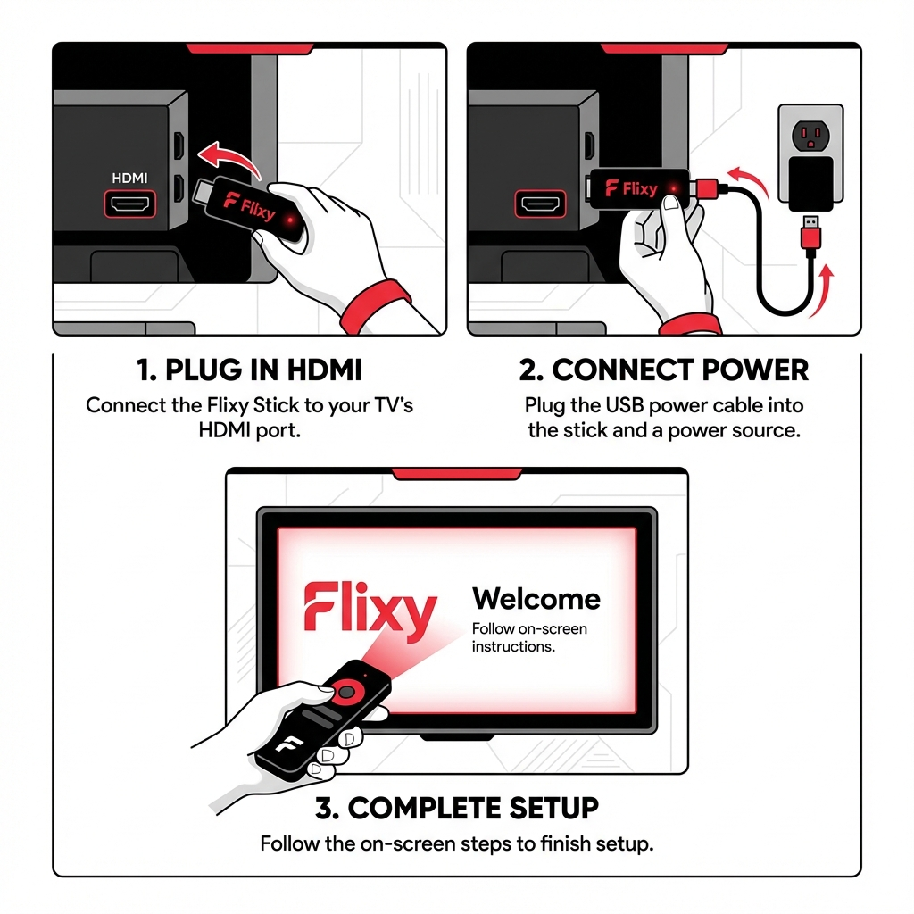
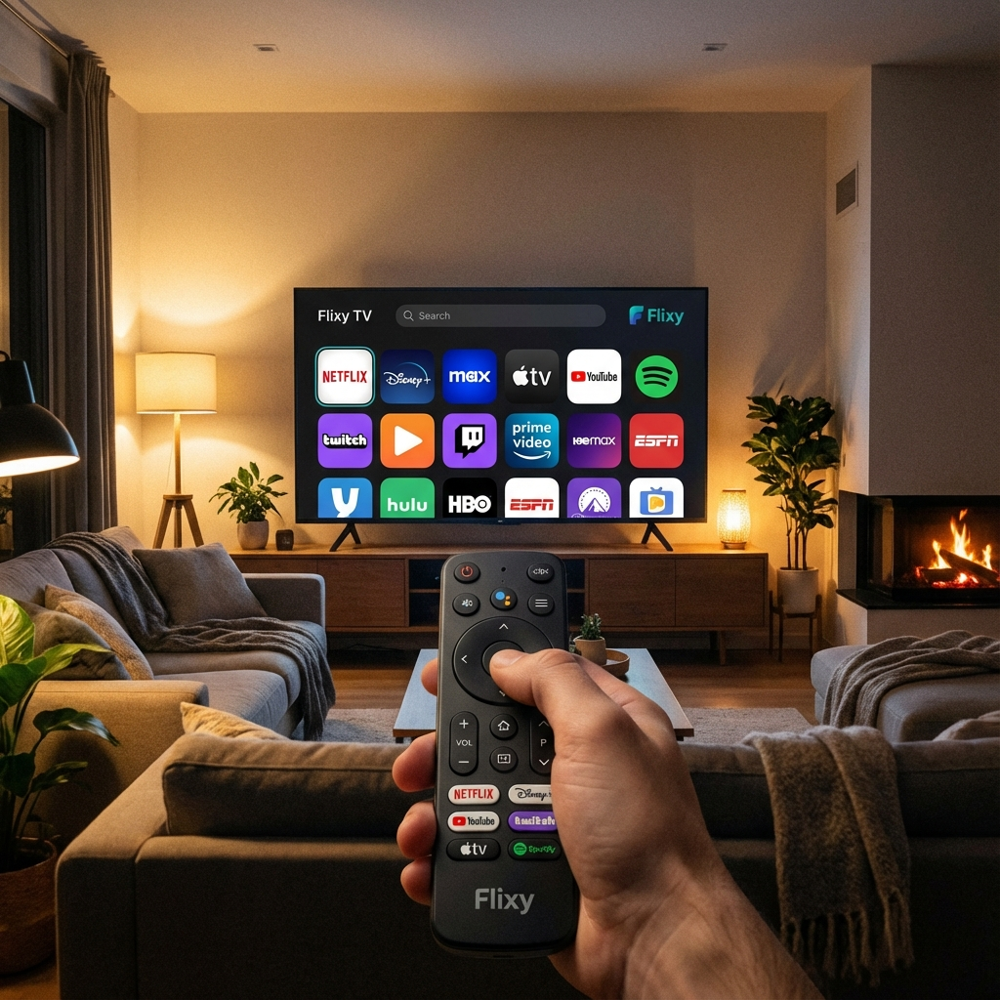
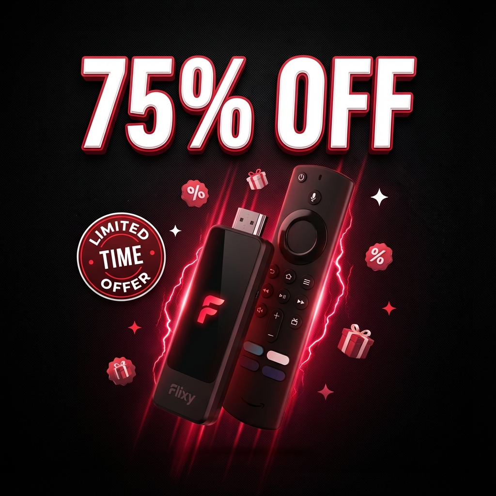
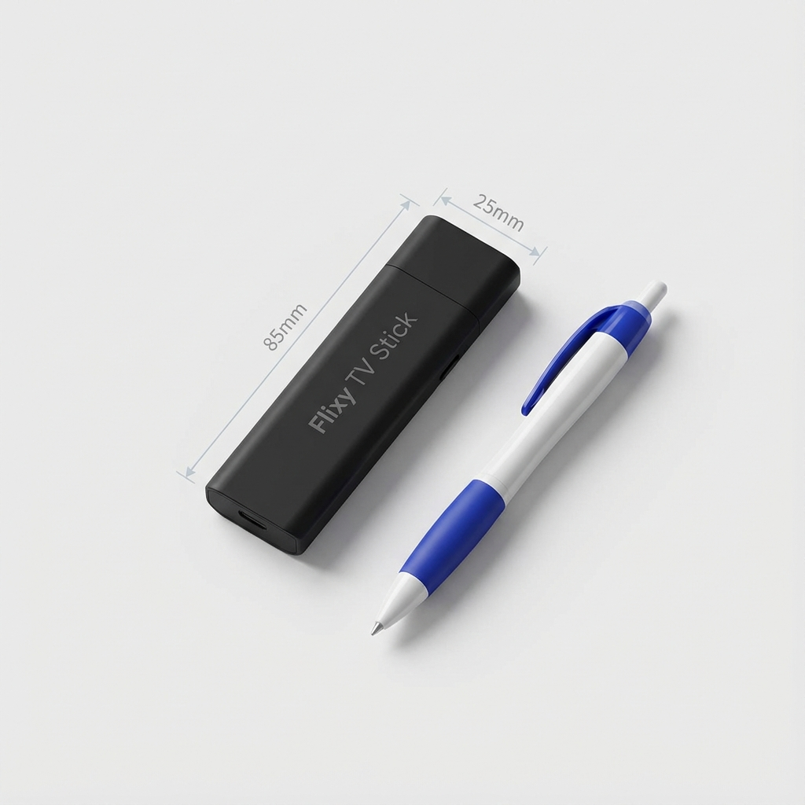
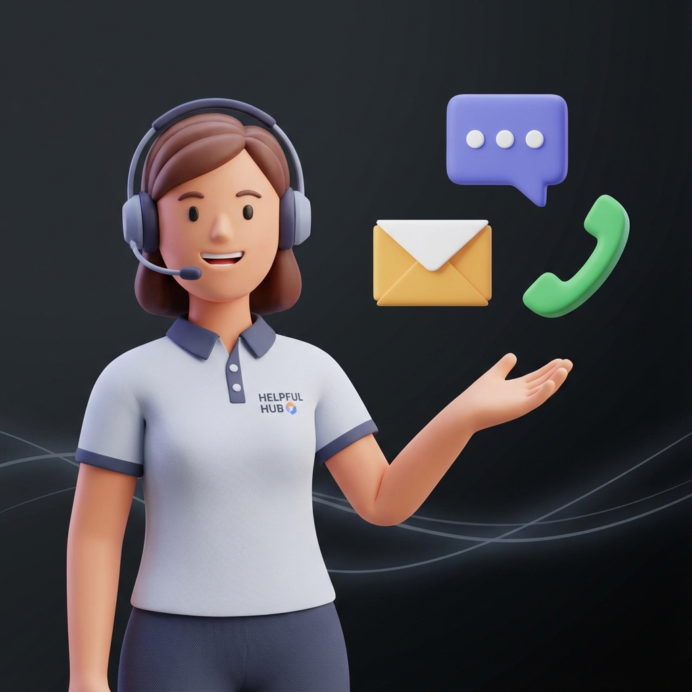

Flixy TV Stick
Upgrade any TV with Flixy, plug into HDMI and stream 1,000+ free channels and apps with no subscriptions.
Why Flixy?
- One-time purchase for lifetime entertainment
- Compatible with any HDMI TV
- AI-powered content curation & ad-free viewing
- 30-day money-back guarantee & secure checkout

Flixy TV Stick Specifications

Product Overview
Flixy TV Stick is not just another streaming gadget; it's a complete entertainment solution. Plug it into your TV's HDMI port, connect it to Wi‑Fi and instantly gain access to thousands of free channels, movies and apps. Its AI‑powered interface learns what you love and organises content accordingly, reducing scrolling and helping you discover new favourites. With no subscription fees and automatic updates, Flixy offers freedom, variety and simplicity in one sleek device.

No Monthly Subscriptions
Say goodbye to recurring bills and subscription fatigue. With Flixy TV Stick, you pay once and enjoy unlimited entertainment forever. No hidden fees, no monthly charges, no surprises on your credit card statement.
While other streaming devices lock you into expensive monthly subscriptions that add up to hundreds of dollars per year, Flixy gives you immediate access to 1,000+ free channels, apps, and live content with just a one-time purchase.
Save Hundreds Annually
Cut cable and streaming bills while keeping all your favorite content
Truly Unlimited Access
Watch as much as you want without worrying about usage limits or extra charges
One-Time Investment
Pay once, enjoy forever – it's that simple
Freedom from subscriptions means more money in your pocket and peace of mind.
1,000+ Free Channels
Access an incredible library of over 1,000 free channels spanning every genre imaginable. From live news and sports to movies, documentaries, and international programming – all without paying a single subscription fee.
Flixy continuously updates its channel lineup, ensuring you always have fresh content to explore. Enjoy live TV, on-demand shows, and exclusive streaming content that rivals premium cable packages.
Live TV & Sports
Watch live news, sports events, and breaking coverage in real-time
Movies & Shows
Thousands of movies and TV series across all genres and languages
International Content
Access channels from around the world in multiple languages
More content than you could ever watch, all completely free.
Built-In Games & Apps
Flixy isn't just for streaming – it's a complete entertainment hub. Enjoy built-in casual games perfect for family fun, plus access to popular apps like YouTube, social media platforms, and productivity tools.
The integrated web browser lets you surf the internet on your TV screen, check emails, or stream content from any website. Transform your television into a versatile smart device.
Casual Gaming
Pre-loaded games for entertainment when you're not streaming
Web Browser
Browse the internet, check social media, or watch online videos
Popular Apps
Download additional apps from the built-in app store
Your TV becomes a complete entertainment and productivity center.
Premium Features Included
Experience premium features that other devices charge extra for. AI-powered content recommendations learn your preferences and suggest shows you'll love. Screen mirroring lets you cast from any device seamlessly.
Enjoy ad-free viewing on most channels, 4K streaming support, and dual-band Wi-Fi for buffer-free entertainment. All premium features are included at no additional cost.
AI Recommendations
Smart content curation that learns what you love to watch
Screen Mirroring
Cast from your phone, tablet, or laptop to your TV instantly
4K Streaming
Crystal-clear picture quality with support for 4K resolution
Premium features without the premium price tag.
Key Features
Unlimited Channels & Apps
Flixy unlocks over 1,000 channels and apps across news, sports, movies, documentaries and international programming. Whether you're into live sports, classic films or niche interests, you'll find something to watch. The channel library continuously updates to ensure fresh content without additional fees.
Experience endless entertainment and save money by cutting monthly subscriptions.
No Monthly Fees, Pay Once
After the initial purchase, there are no recurring bills. Unlike other streaming devices that act as gateways to paid services, Flixy provides immediate access to a wide content library at no extra cost.
Imagine saving hundreds of dollars each year while still enjoying premium content.
AI‑Powered Content Sorting
Flixy's built‑in AI analyses your viewing habits and recommends shows, movies and channels tailored to your tastes. Over time it becomes more accurate, surfacing content you'll love without endless scrolling.
Discover new favourites effortlessly and spend more time watching, not searching.
Ad‑Free Experience
Enjoy uninterrupted entertainment. Flixy's interface is designed to deliver an ad‑free viewing experience across its apps and channels. No more annoying commercials interrupting your binge sessions or live sports.
Focus on the story or the game without pesky interruptions.
Plug‑and‑Play Convenience
Setting up Flixy takes less than two minutes. Plug the device into your TV's HDMI port, connect it to Wi‑Fi and start streaming immediately. There are no complicated installations or technical skills required.
Even tech novices will appreciate the simplicity, perfect for kids, grandparents or travellers.
Built‑In Games & Web Browser
Flixy isn't just for streaming. It includes casual games for family fun and a built‑in web browser for checking email, visiting websites or watching YouTube directly on your TV. Your television becomes a full entertainment hub.
Turn your living room into a gaming zone or surf the web on a big screen.
Dual‑Band Wi‑Fi & Screen Mirroring
With dual‑band Wi‑Fi, Flixy ensures stable HD and 4K streaming. The device also supports screen mirroring, so you can share videos, photos or presentations from your smartphone, tablet or laptop onto the TV.
Host movie nights or business presentations without lag or buffering.
Compact & Portable
Flixy's slim design tucks neatly behind your TV and fits easily in your pocket for travel. Bring your entertainment with you to hotels, RVs or friends' houses and stream anywhere with Wi‑Fi.
Enjoy your favourite shows wherever you go, perfect for digital nomads and road trips.


Material, Build Quality & Technical Specs
Crafted from durable, heat‑resistant ABS plastic, Flixy is built to withstand continuous use. The gold‑plated HDMI connector provides solid signal transfer, while the vented housing prevents overheating during long streaming sessions. Inside, the 1 GB RAM and 8 GB storage keep apps running smoothly. The dual‑band Wi‑Fi module ensures strong reception, and the processor is optimised for low power consumption.
Feel confident in a device designed for longevity and dependable performance.
Flixy TV Stick Setup
Plug In
Insert Flixy into your TV's HDMI port and connect the USB cable to a power source.
Connect to Wi‑Fi
Turn on your TV, select the correct HDMI input and join your home Wi‑Fi network.
Start Exploring
Browse apps, channels or use the built‑in browser; Flixy's AI will begin recommending content you'll love. Within minutes, you'll have a smart TV experience without cables, satellite dishes or hidden fees.
Quick setup means instant gratification, no waiting, no hassle.

How to Use & Guidelines
- Place Flixy into an available HDMI port and power it via the TV's USB or the included adapter.
- Follow on-screen instructions to select your Wi‑Fi network and enter the password.
- Use the remote to explore preloaded apps, search for channels or play games.
- Access settings to customise language, time zone, or parental controls to match your region.
- To mirror your smartphone, enable screen sharing on your device and select Flixy from the list of available displays.

Flixy TV Stick Reviews & Opinions
"I found a flixy tv stick discount on the official site and decided to give it a try. Best impulse buy ever. The Flixy streaming device loads fast, and the setup took maybe two minutes max. Zero hassle."
"I cancelled cable and three streaming services flixytv gives me everything I actually watch in one place. Setup was simple and I'm saving a fortune!"
"I wasn't sure if it was legit, but the flixy tv stick customer reviews convinced me. Now I get tons of channels and apps without subscriptions. For the flixy tv stick price, it's honestly better than most gadgets I've bought."
"Plugged flixxy into the guest room tv, now it's the kids' favourite room. Screen mirroring and games have brought us closer together."
"Thought I needed a new smart tv, but flixytv made my old set feel brand new. The browser and games were an unexpected bonus."
"The flixy streaming stick runs smoother than I expected and the free channels keep me entertained without paying for extra apps."
These testimonials reflect common themes: easy setup, cost savings and renewed enjoyment of older TVs.
98% of reviewers say they would recommend Flixy to a friend.
Limited Time Special Offer / Discount / Bundle Deals
Choose Your Package
1x Flixy
2x Flixy
3x Flixy
4x Flixy


Device Dimensions & Colour Options
Flixy measures just 85 mm × 25 mm × 10 mm and weighs less than 30 grams. Its sleek black finish blends seamlessly behind any TV. The remote is compact and ergonomic, making navigation comfortable even during long binge sessions.
A compact design ensures it won't clutter your entertainment area.
Who Should Buy Flixy
Cord‑Cutters
Tired of rising cable and streaming bills? Flixy offers a one-time purchase solution with 1,000+ free channels, eliminating monthly subscription fatigue.
Families
Looking for an all-in-one solution with parental controls and kids' content? Flixy provides safe, family-friendly entertainment for everyone.
Travellers & Digital Nomads
Want entertainment on the go? Flixy's compact design fits in your pocket, bringing your favorite shows to hotels, RVs, and anywhere with Wi‑Fi.
Owners of Older TVs
Seeking smart functionality without replacing your TV? Flixy upgrades any HDMI TV instantly, breathing new life into older sets.
Budget‑Conscious Buyers
Want premium features without a subscription? Flixy delivers AI-powered recommendations, ad-free viewing, and unlimited content for a single payment.
If you recognise yourself in one of these categories, Flixy is tailored to your needs. It combines affordability with convenience and variety, making it an excellent investment for any household.

Comparison Table: Flixy vs Other Streaming Devices
| Feature | Flixy TV Stick | Roku / Fire TV / Chromecast |
|---|---|---|
| Monthly Fees | None – one‑time purchase | Often requires paid subscriptions |
| Content Access | 1,000+ free channels & apps | Limited free channels; mostly paid apps |
| AI Recommendations | Yes, personalised content sorting | Basic or none |
| Built‑In Games | Yes | Rare or requires downloads |
| Screen Mirroring | Built‑in for any device | Varies; sometimes only from mobile OS |
| Ad‑Free Experience | Ad-free viewing | Ads included in free apps |
| Compatible TVs | Any HDMI TV | Requires specific OS versions |
| Price Point | Affordable single payment | Varies; often requires multiple subscriptions |
Shipping & Returns
Flixy ships worldwide, with a primary focus on fast delivery across the United States, via trusted carriers. Orders are processed within 24–48 hours and typically arrive within 7–14 days depending on your location. Shipping fees are calculated at checkout.
If you're not satisfied, return the product within 30 days for a full refund. The device must be in its original packaging with all accessories. To initiate a return, contact customer support via email or live chat.
Risk-free purchasing encourages you to try Flixy without worry.

Money‑Back Guarantee
Flixy is backed by a 30‑day money‑back guarantee. If the device doesn't meet your expectations, simply return it within 30 days for a full refund, no questions asked. This guarantee underscores the brand's confidence in delivering value and gives you peace of mind when ordering.
Assurance that you can test Flixy risk-free.
FAQs (Frequently Asked Questions)
Is there a monthly fee to use Flixy?
No, Flixy TV Stick has no monthly subscription fees. After the one‑time purchase, you unlock access to thousands of channels and apps without ongoing costs.
What do I need to start using Flixy?
All you need is a TV with an HDMI port and a Wi‑Fi connection. Plug Flixy in, power it via USB, connect to Wi‑Fi and you’re ready to stream.
Does Flixy include local channels and live TV?
Yes. Flixy provides access to live TV channels, including news and sports, through its vast library of free content. Channel availability may vary by region.
Can I watch in HD or 4K?
Absolutely. Flixy supports high‑definition streaming and, if your TV supports it, 4K resolution for crystal‑clear visuals.
What if Flixy doesn’t work on my TV?
Flixy is compatible with any TV that has an HDMI port. If you encounter issues, contact customer support to troubleshoot or arrange a return under the 30‑day guarantee.
Is Flixy compatible with older TVs?
Yes. As long as your TV has an HDMI port (commonly available since 2003), Flixy will work. This makes it ideal for updating older sets without buying a new smart TV.
Does Flixy come preloaded with apps and channels?
Flixy arrives with a curated selection of free apps, games and channels, and you can download more via the built‑in store. Automatic updates add new options over time.
How do I mirror my phone or laptop?
Enable screen mirroring on your device (e.g., AirPlay or Miracast) and select Flixy from the available displays. Your content will appear on the TV in seconds.
Where can I get help if I have questions?
You can contact Flixy’s 24/7 support team via live chat, email or phone. See our Contact Support section below.
Does Flixy really work?
Yes. The Flixy TV Stick works as a plug-and-play streaming device that connects to any HDMI TV. Once installed, it loads 1,000+ free channels, apps, and live content. Most Flixy TV Stick reviews highlight smooth streaming, easy setup, and good performance for the price.
What is “Try Flixy”?
“Try Flixy” refers to the limited-time offer that lets you test the Flixy streaming stick with a 30-day money-back guarantee. It’s promoted on the Flixy TV Stick official website for new customers.
Is the Flixy TV Stick legal?
Yes. The Flixy TV Stick is legal as a hardware device. It acts like any other streaming stick, it simply accesses publicly available channels and apps. Legal use depends on watching content available in your region.
What is the Flixy TV Stick?
The Flixy TV Stick is a compact HDMI streaming device that turns any TV into a smart TV. It includes free channels, apps, a browser, screen-mirroring features, and automatic updates. It’s designed for people looking for an affordable, no-subscription streaming option.
What are the common Flixy TV Stick reviews & complaints?
Most Flixy reviews mention easy setup, good performance, and strong value. Common complaints include Wi-Fi-dependent performance and occasional regional channel limitations. Some users also note shipping times depending on whether they buy from the official Flixy store or third-party sellers.
Is the Flixy TV Stick a scam?
No, the Flixy TV Stick is a real streaming device sold worldwide, including the UK, Canada, and Australia. Issues arise only when people buy from unofficial sites. Always purchase from the Flixy TV Stick official website for warranty and returns.
Is Flixy TV Stick legit?
Yes. The device is legit and widely sold as a smart TV upgrade. The brand offers a 30-day return policy and support. Thousands of Flixy stick reviews across multiple regions confirm it is a working product.
How does the Flixy Stick work?
The Flixy stick plugs into your TV’s HDMI port. Once powered, it connects to Wi-Fi and loads its interface, allowing you to access apps, free channels, a browser, games, and mirroring tools. Typical Flixy TV Stick installation time is under 2 minutes.
Is Flix TV worth the money?
For users wanting a low-cost, no-subscription streaming option, Flixy TV is considered worth it. It provides wide content access, portable use, and lifetime compatibility for a one-time Flixy TV Stick price.
Can you watch Netflix on Flixy?
Yes. The Flixy streaming device supports major apps like Netflix, YouTube, and Prime Video, depending on your region. App availability may vary, similar to other third-party streaming sticks.
Is Flixy available on app stores?
The Flixy TV smart stick is a physical device, not a downloadable app. You won’t find it in app stores, though you can download apps onto the device through its built-in app library.
Is Flix a free app?
Flixy isn’t an app, it’s a hardware streaming stick. However, many of the Flixy TV Stick free channels require no subscription.
Is Flixy portable?
Yes. The Flixy TV Stick is lightweight and travel-friendly, making it easy to use in hotels, rentals, or anywhere with Wi-Fi. Many customers buy a second Flixy stick for sale specifically for travel.
Is Flixy a good streaming service?
Flixy is primarily a streaming device, not a service. But it provides access to a large channels list, apps, and global content, making it an appealing alternative to subscription platforms.
Is Flixy TV Stick a good choice?
If you want an affordable, plug-and-play streaming option with no monthly fees, the Flixy TV Stick is a solid choice. Its key benefits include portability, free channels, AI navigation, and universal HDMI compatibility.
Does Flixy work with a smart TV?
Yes. You can plug the Flixy TV Stick into any HDMI port, including newer smart TVs. Some users prefer it because it simplifies navigation and adds additional apps not available on stock smart TV systems.
What is the Flixy TV Stick channels list?
The Flixy TV Stick channels list includes free live TV, movies, sports, news, international content, kids’ shows, lifestyle channels, and app-based streams. Since Flixy works as a universal streaming device, the exact lineup varies by region, Wi-Fi quality, and the apps you install. Most users say Flixy offers far more free channels than standard smart TVs, with new options added through automatic updates.
Ready to Upgrade Your TV?
Join thousands of happy customers and start streaming for free today. Enjoy a 30-day money-back guarantee with every purchase.
Security & Checkout Assurance
Shopping with Flixy is secure. The official checkout uses SSL encryption to protect your payment details and personal data. Multiple payment methods are accepted, including credit cards and PayPal. The site adheres to strict privacy policies to ensure that your information remains confidential.
Assurance of safe shopping builds trust and reduces purchase hesitation.

Contact Support
Need assistance? Flixy offers 24/7 customer support via:
Live Chat
Connect instantly with a representative via the website.
Send your queries to support@flixyofficial.com for detailed assistance.
Phone
Call +1 (402) 798‑4931 for urgent inquiries.
Last Updated
This page was last updated on February 11, 2026.